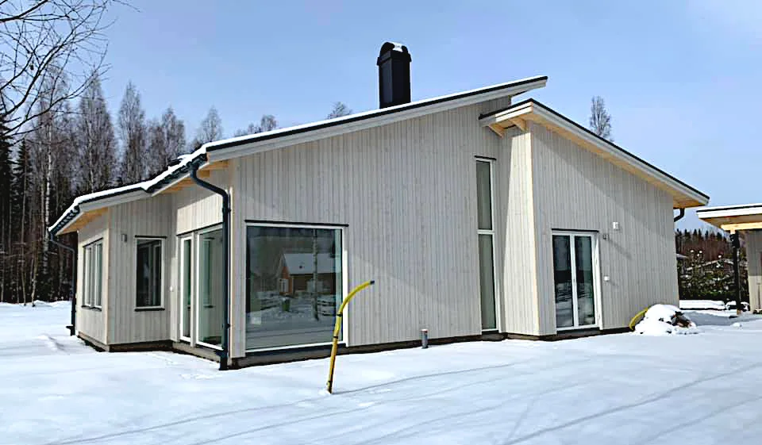
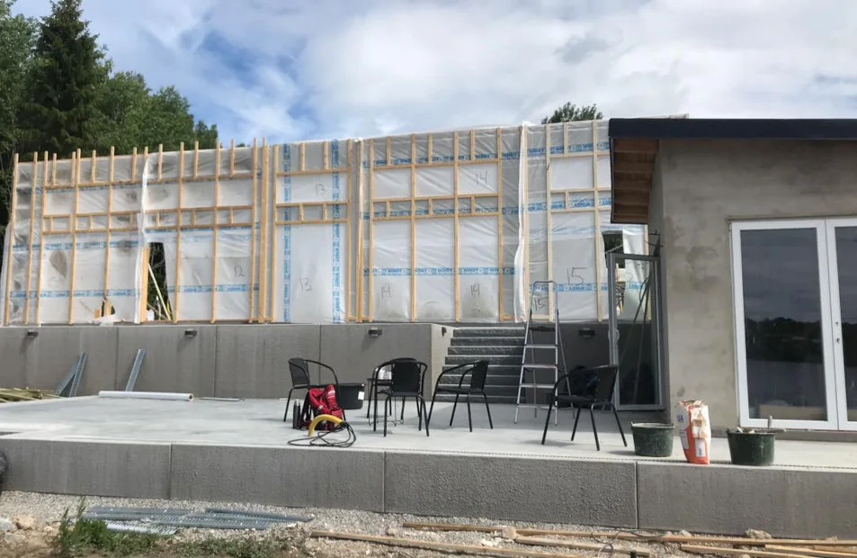

Nybyggnation i Vad
Smedjebackens kommun
En nybyggd villa, ett nytt tak eller en hotellmiljö. Här är några av projekten från vår verksamhet.
Färdiga hus och arbetet som tar oss dit. Klicka på en bild för att se den större.




Berätta om din idé, så pratar vi om nästa steg.